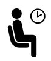
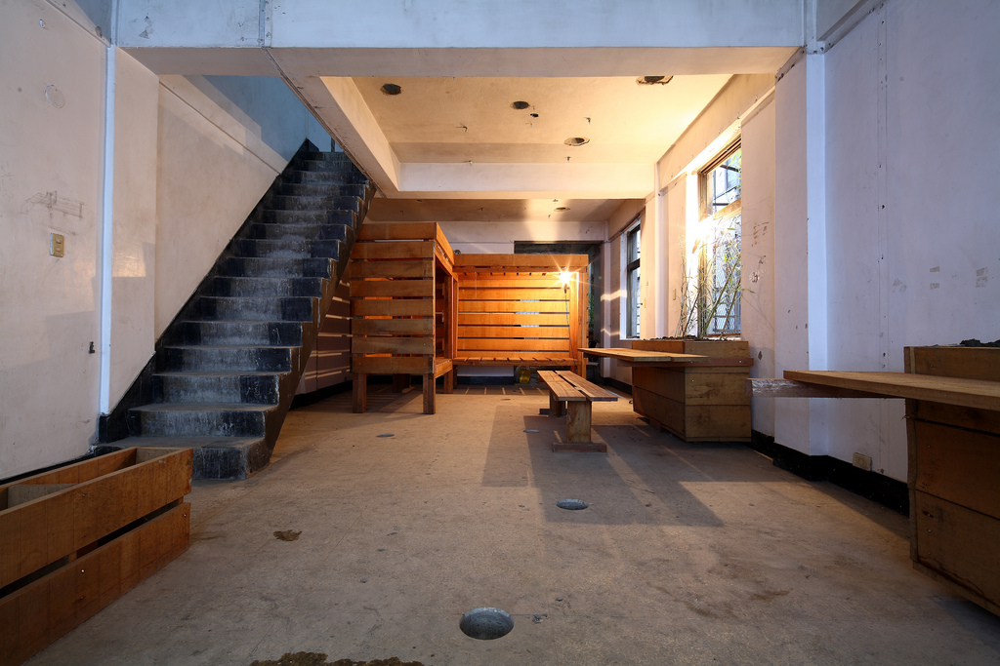

A specific project
Motivation
This pattern can help project participants get started, get focused, and make concrete change. It is especially useful for someone who is currently feeling stuck.
Context
We often find ourselves confronted with what seems to be a difficult, complex, or even insurmountable problem. It won’t go away, but a workable solution doesn’t present itself, either. If there is a candidate solution, it’s also clear there are not enough resources for it to be feasible.
Forces
Difficulty: bringing about meaningful change is often hard work.
 Inertia: when things are hard we may feel stuck, wring our hands, or preach to the choir.
Problem
One is often blinded by one’s prejudices and preferences. Some may put considerable energy into pondering, discussing, exploring and feeling stuck. Some may want more concrete progress, and notice the time passing by. In a group setting, when the forward-movers ultimately try to act, those who are more wrapped up in the experience of pondering and exploring may rebel, if they feel that they are being left behind. Inaction may seem like the only safe choice, but it has risks too. And, once moving, things can easily get bogged down again.
Solution
One way to make progress when you’re stuck is to ask a specific question to someone who may be able to help you get unstuck. Formulating a question helps your thinking become more concrete. Sometimes you’ll see that a solution was within your grasp all along. Often, one question won’t be enough, but you can repeat the process. In this way, you can reduce a large, complex, or ephemeral concern into a collection of smaller, specific, manageable tasks with clear next steps and success criteria. Use a Scrapbook to make note of all the small things, and weave them into your project Roadmap. This will show how the small pieces relate to the bigger picture. If you have a fairly specific idea about what you want to do, but you’re finding it difficult to get it done, don’t just ask for advice: recruit material help (cf. Carrying capacity). One example of a specific project from the Peeragogy project is our work on this paper, which had a specific target audience, a set of associated deadlines, and allowed us to get help from pattern experts.
Rationale
We’ve seen time and again that having a specific project is a recipe for getting concrete, and that getting concrete is necessary for bringing about change. Asking for help (which is what happens when you vocalize a question) is one of the best ways to gain coherence. Making yourself understood can go a long way toward resolving deeper difficulties.
Resolution
Where you run into difficulty, getting specific paves the way for incremental forward progress and helps to overcome inertia. The struggle between consensus and action is resolved in a tangible project that combines action with dialog. Learning something new is a strong sign that things are working. In the Peeragogy project, we have completed many projects during our weekly hangouts, for example “hive editing” an abstract for submission to a conference.
Example 1
At first glance, the Wikimedia Foundation’s mission may seem like a good idea, but hard to do anything about.1 practice, many Wikipedians contribute to the mission by working on A specific project.
 Dormitory, Ruin Academy, Taipei, Taiwan.
Within Wikipedia, these are known as “WikiProjects.”2,^3 on how to start new WikiProjects.4 Wikimedia Foundation also runs other public projects, including the Wikipedia Education Program and the GLAM Wiki (for Galleries, Libraries, Archives, and Museums).5,6 list of case studies that describes specific projects undertaken by cultural organizations and Wikimedia.7
Example 2
Collegial and convivial peer support via remote collaboration or short-term meet-ups may fill some of the requirements of “student life”. Peeragogy can also happen in neighborhoods, and among persons sharing long-term co-habitation. While a traditional Dormitory may not be necessary, a shared rented or cooperatively-owned living/working environment could be an asset for peeragogues working together on A specific project.
What’s Next in the Peeragogy Project
Let’s use our pattern catalog to build specific, tangible “what’s next” steps, add them to our Roadmap, and carry them out with concrete actions. Let’s be sure we know who’s responsible for what, and employ a “buddy system” to help get things done.
-
https://en.wikipedia.org/wiki/Wikipedia:WikiProject_Council/Directory ↩
-
https://en.wikipedia.org/wiki/Wikipedia:WikiProject_Council/Guide ↩
-
https://en.wikipedia.org/wiki/Wikipedia:WikiProject_Council/Guide/WikiProject ↩
-
https://outreach.wikimedia.org/wiki/Education/Wikipedia_Education_Collaborative/Tasks ↩